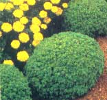
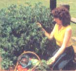

Now, as wild winter winds rattle windowpanes, it's time to retreat to the garden of your mind. Pull out the pile of glossy catalogs and lose yourself for hours on end in their lush summertime of pictures and words.
The cornucopia I call my mailbox is overflowing-as usual-with catalogs from seed houses large and small. In this issue, I'll only be able to review some of the new offerings . . . but the rest will appear in the next issue of MOTHER.
Among the introductions from Agway, the big northeastern cooperative that sells mainly through its local stores, are the high-yielding Bounty bush bean, an early (50-day) variety with 6-inch pods that are slow to develop seeds . . . Prominence broccoli, a strong-growing 75-day cultivar that produces heavily . . . White Summer cauliflower, a good fall cropper with self-wrapping characteristics and excellent color and texture . . . Gold Dust corn, an early (72-day) yellow with good cold tolerance and vigor . . . and Fiesta Hybrid ornamental corn, which bears multicolored 7- to 10-inch ears that mature in a brief (for an ornamental) 102 days on short, sturdy stalks. Other Agway offerings include the very early (53-day) Red Ace beet, a hybrid with extremely high sugar content and welcome bolt and heat resistance, as well as tolerance of Cercospera leaf spot disease . . . Chinook II, a 42-day hybrid semi-savoyed spinach that combines the best of both worlds: It overwinters well and is slow to bolt in hot weather . . . and Castlette, a determinate hybrid cherry tomato that bears abundant crops 75 days after being set out and is resistant to verticillium and Race 1 (a prevalent type) of fusarium.
The folks at Spring River Nurseries (Dept. N, Spring River Rd., Hartford, MI 49057) have called my attention to a new "day neutral" strawberry, Brighton, that's capable of fruiting year-round! The result of research at the University of California and the USDA's facilities in Maryland, Brighton was developed from a plant that was found growing in the mountains of Utah. Unlike standard and everbearing varieties-both of which fruit in response to specific patterns of daylight-this cultivar's fruiting mechanism is unaffected by day length. In fact, if you take some plants in to a sunny window in the fall, you can have fresh berries for the holidays! The only thing that stops Brighton from bearing is temperatures over 100°F. (I must admit that I slow up under such conditions, too.) Since Brighton forms many runners that are capable of fruiting without being anchored in the soil, the plant makes a perfect indoor pot specimen. Send $1.00 to Spring River for two sample plants plus free information.
Park Seeds (Greenwood, SC 29647; free catalog) has a number of new offerings, including Red Sails lettuce, an All-America selection for 1985. An open-head variety, the red-leaf lettuce matures in 45 days and is more resistant to bolting than most "greens" of similar color. With its habit and hue, Red Sails would make a wonderful border plant for the garden . . . interspersed, perhaps, with another winner from Park: Spicy Globe basil. Its small leaves combine the goodness of basil with a touch of the tingle of cinnamon, while the plant's form is naturally ball-shaped. Other goodies from Park include the Sugar Daddy pea, the latest miracle from Dr. Calvin Lamborn's breeding program. Resistant to powdery mildew, Sugar Daddy also does away with what many felt was the single flaw of the Sugar Snap pea: the string. This short (30-inch vines) and early (72-day) snap pea is a genuine "gobble 'em in the garden" delight. And for those fond of peas and carrots, Park offers Lindoro, an early-but large-Nantes-type root with a bright orange color, crisp texture, and a fine sweet flavor. And though it's too early by several months to plant it, Sweet Winter onion can make a wonderful menu addition for 1986. You see, these hardy globes are started in late summer and carry over winters as cold as -20°F with perfect aplomb. The sweet-flavored "tearjerkers" provide an extra-early crop and also resist bolting.
One of our favorite seed houses, Pine Tree Garden Seeds (RR 1, Box 397, New Gloucester, ME 04260; free catalog), has a double treat for gardeners in 1985: the Jenny Lind melon and a wax bean named Dragon Langerie. The melon, unlike its namesake, is of surpassing ugliness, sporting a coiffure much like that of a turbaned squash. It's not very big, either: about 12 ounces, on average. But the flavor ... ah, the flavor! Dick Meiners, Pine Tree's owner and a state-of-Mainer who does not exaggerate, modestly asserts that "several experts have indicated that it is the sweetest melon they've ever tasted." I believe him. The vines run 4 to 5 feet, and the yield is excellent.
The bean with the fancy French moniker is an unusual looker, too: long, flat, yellow, and covered with purple stripes. The stripes disappear in cooking, leaving you with a pot of luscious-looking legumes. Dick says that the fifth picking produces about as much as the first (ayuh!), and claims that the bean is good fresh, cooked, shelled, or dried.
Folks who live in areas where warm early-autumn nights keep their Delicious apples from coloring up might want to check out StarkSpur UltraRed Delicious, a new introduction from Stark Bros. (Louisiana, MO 63353; free catalog). And organic growers will be especially pleased with the performance of Stark's new disease-resistant seedless grape, Mars. The high-yielding vines bear fruit that is akin to Venus and Reliance, characterized by a strong Concord-like flavor . . . and it shrugs off just about all major grape diseases.
|
 Spicy Globe basil |
 Sugar Daddy peas |
|